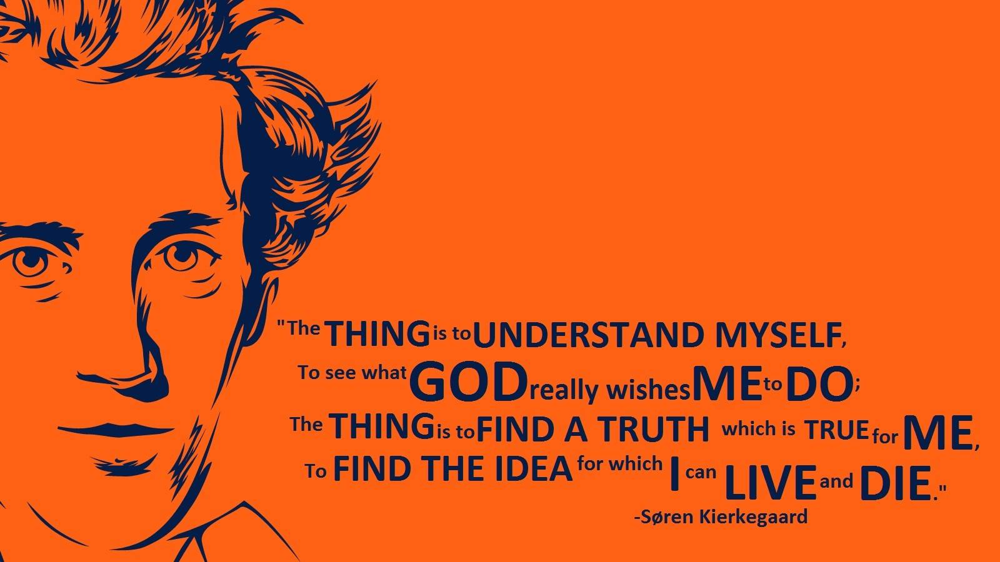
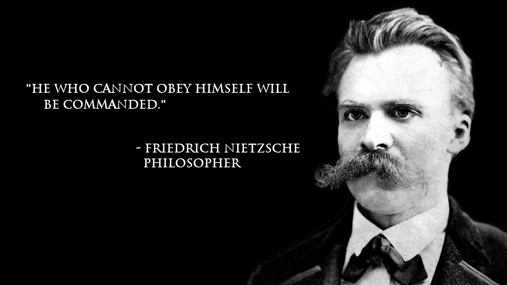
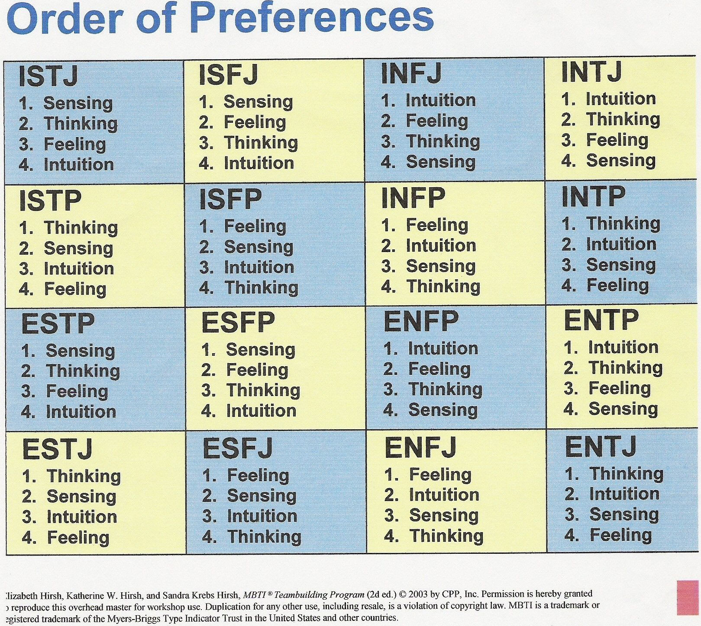
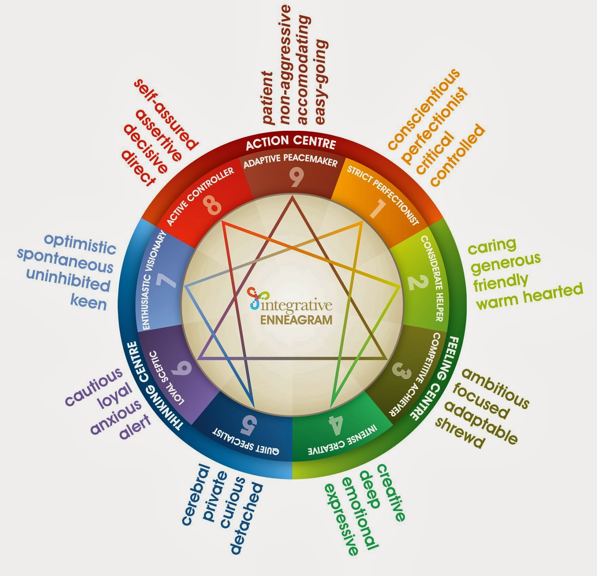

Self-Development

There are 2 Ways Of Thinking:
1. Fixed Mindset
2. Growth Mindset
Fixed Mindset: The Self-Limiting Beliefs
This belief believes that people were born with set of abilities and
character which cannot be changed throughout the person's life. The fixed mindset included:
"Failure is the limit of my abilities",
"I'm either good at it or i'm not",
"My abilities are unchanging",
"I don't like to be challenged",
"I can either do it, or leave it",
"My potential is predetermined",
"When i'm frustated, i give up",
"I stick to what i know",
"Feedback and criticism are personal",
Example of Having Fixed Mindset:
"I'm too shy to speak in front of the class."
"Other people's successes make me feel bad about myself."
"When people give me feedback, it feels like criticism."
Growth Mindset
While fixed mindset implies that people are bound by fate or existing condisition,
growth mindset tells you that you are in control of your own growth.
"Failure is an opportunity to grow"
"I can learn to do anything i want"
"Challenges help me to grow"
"My effort and attitude determine my abilities."
"Feedback is constructive"
"I am inspired by the success of others"
"I like to try new things"
Example of Having Growth Mindset
"With practice, i can become more confident and improve my public speaking skills."
"Other people's successes encourage and inspire me. They show me
what is possible>"
"I appreciate when people give me feedback. It Helps me learn and grow."
"It Takes practice and action to Grow"
Quotes

Everything that lives is designed to end. We are perpetually trapped in a never-ending spiral of life and death. Is this a curse? Or some kind of punishment? I often think about the god who blessed us with this cryptic puzzle...and wonder if we'll ever get the chance to kill him.
~ 2B, Nier Automata
___________________________________
Why can't you understand Chris? Do you really believe the world is worth saving? Natural selection leaves the survivors stronger and better. Humans have escaped this winnowing for far too long. War and pestilence wherever you go! Everywhere, nothing but loathsome humans.
~ Albert Wesker, Resident Evil
___________________________________
It sure isn't all sunshine and rainbows, but there are people who taught me to never give up. They've been guiding me and showing me all the beautiful things in this world. I love them, and I love what they love. We're connected by this sword. It will burn up the darkness to make way for light! This will be... our path back home!
~ Kiana Kaslana, Honkai Impact
___________________________________
Life is locomotion... if you're not moving, you're not living. But there comes a time when you've got to stop running away from things... and you've got to start running towards something, you've got to forge ahead. Keep moving. Even if your path isn't lit... trust that you'll find your way.
~ "The Flash" Berry Allen, DC Universe
___________________________________
“Wealth consists not in having great possessions, but in having few wants.” “Don't explain your philosophy. Embody it.” “There is only one way to happiness and that is to cease worrying about things which are beyond the power or our will.”
~ Epictetus, Philosopher
___________________________________
"No two things combine better than knowledge and patience."
~ Muhammad, the Prophet
Myerss Briggs Personality
The Myers-Briggs Personality Type Indicator is a self-report inventory designed to identify a person's personality type, strengths, and preferences. The questionnaire was developed by Isabel Myers and her mother Katherine Briggs based on their work with Carl Jung's theory of personality types.
Enneagram
The Enneagram defines nine personality types (sometimes called "enneatypes"), which are represented by the points of a geometric figure called an enneagram, which indicate connections between the types. There are some different schools of thought among Enneagram teachers and their understandings are not always in agreement.
There has been limited formal psychometric analysis of the Enneagram and the peer-reviewed research that has been done is not accepted within the relevant academic communities. Though the Enneagram integrates concepts[which?] generally accepted in a theory of personality, it has been dismissed by personality assessment experts as pseudoscience.
Myerss Briggs Personality

Myers-Briggs base this on the premise that you can simplify the major drivers of behaviour into four pairs of contrasting traits, for a total of eight. Each person prefers one of each pair, giving four traits that define them, as follows:
Introversion versus extroversion (I/E): Extroversion (sometimes spelt 'extraversion') refers to a preference for focusing on things that are outside of yourself, such as a liking for exploring your surroundings and interacting with others. Conversely, introversion means that you prefer to focus on internal things, such as ideas that you can study.
Sensing versus intuition (S/N): An intuitive individual uses their instincts to guide their reactions, opinions and conclusions. A sensing person prefers to use verifiable facts, past experiences and observations instead.
Thinking versus feeling (T/F): A feeling person's emotions are more like to guide their initial reaction to a situation. Conversely, logic and reasoning tends to guide a thinking person's first reaction.
Judging versus perceiving (J/P): If you're a perceiving person, you like to have an adaptable approach to how you organise your life and enjoy spontaneity. Conversely, a judging person is much fonder of order and routine and has a preference for tradition, structure and careful planning.
The two letters after the names in the acronyms denote personality types. For example, a person who is extroverted, intuitive, feeling and perceiving would be an ENFP personality type. The name of this methodology comes from Isabel Myers and Katharine Briggs, a mother and daughter who developed this personality theory together. It's important to note that there's an official MBTI test that costs money for the results, in addition to many others that you can find for free.
Enneagram

Each basic type in the Enneagram is also connected by two lines to two other basic types; for example, Type 1 is connected to Type 7 and Type 4. The first line connects to the type which the person has left behind or repressed in childhood; the characteristics of this type must be reintegrated in order for the person to develop. The second line connects to the type which the person may grow into once they are ready to reach a higher state of development.